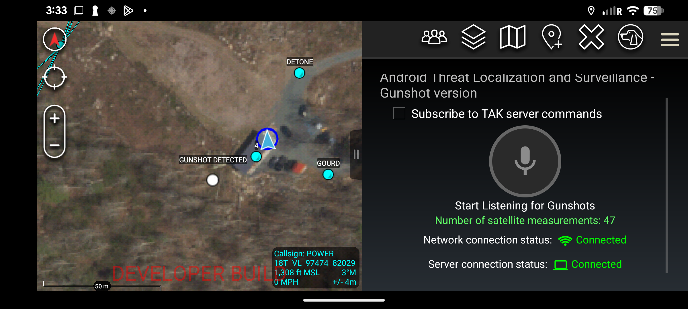
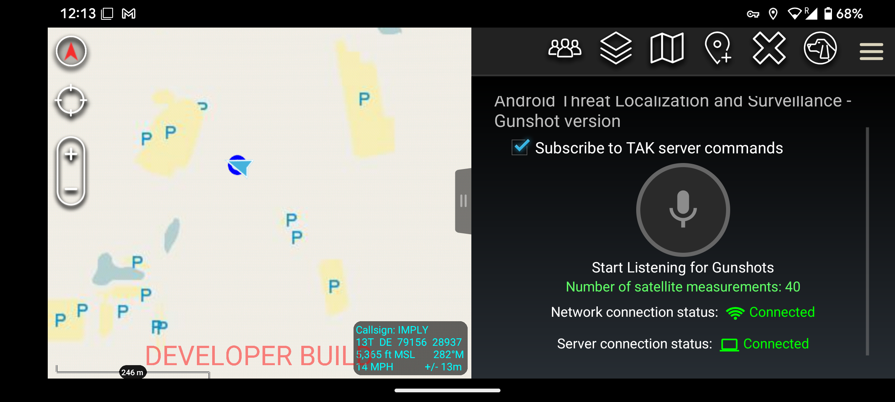
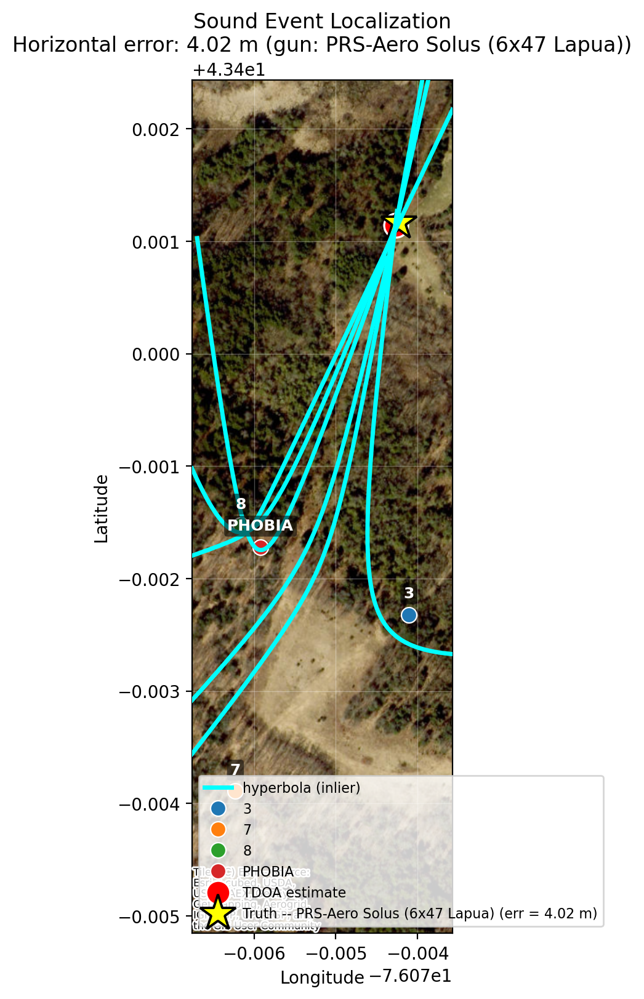
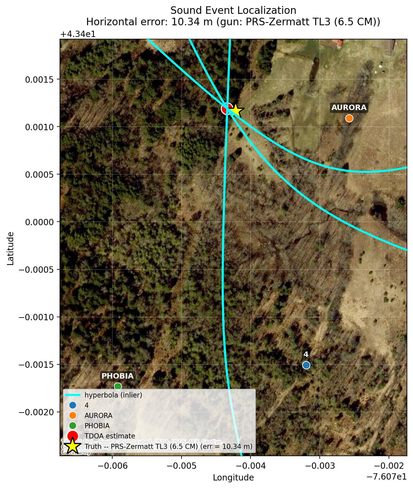
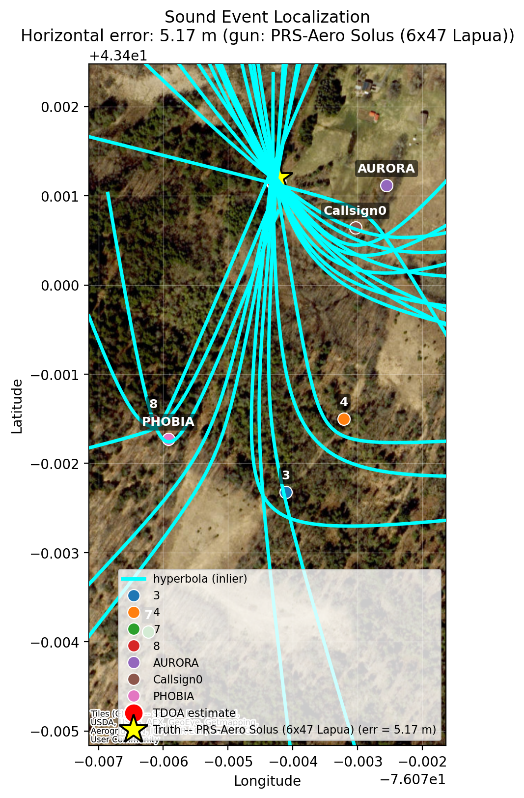
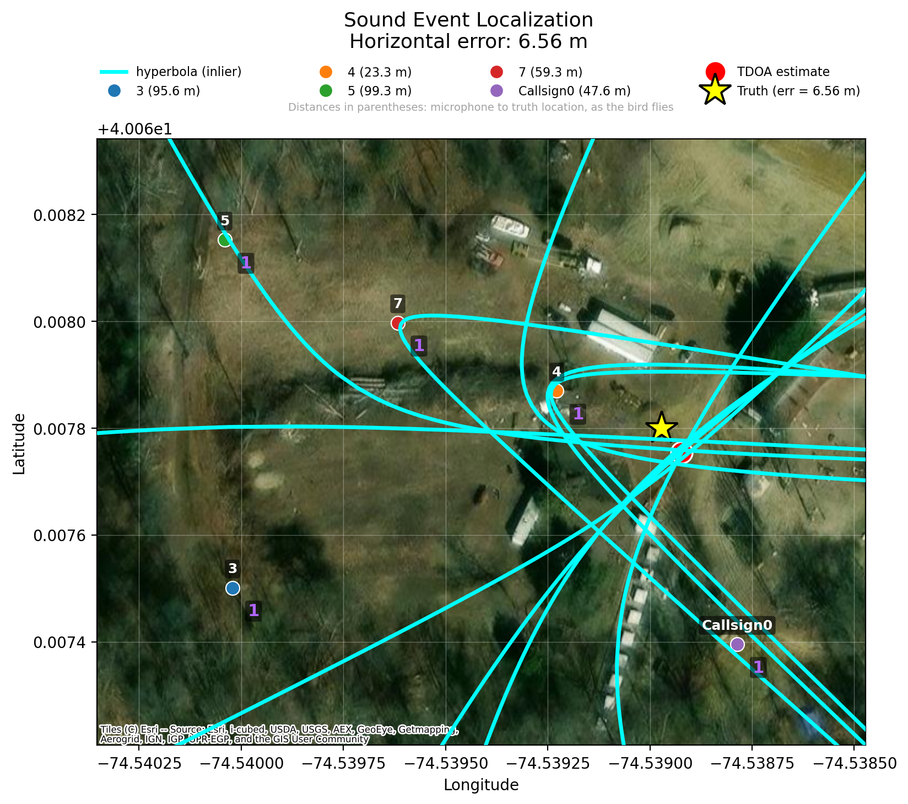
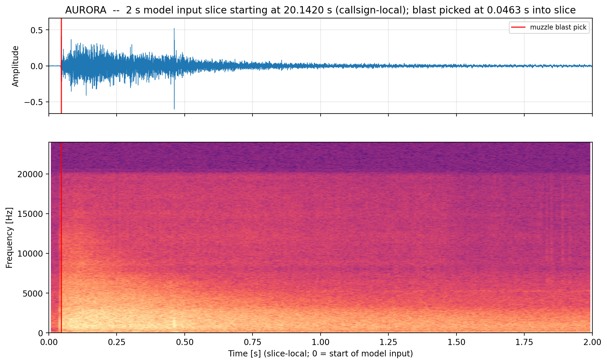
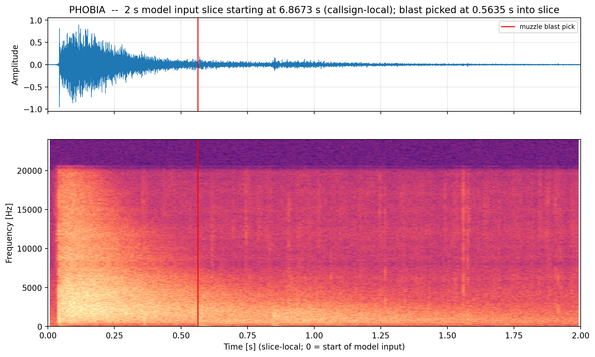

Every connected phone can help locate a shot.
ATLAS Gunshot Localization connects GPS-ready phones to a gunshot-processing server. Together, participating devices detect an event and turn its arrival timing into a location on the TAK map.
Talk to us ↗
Record when your device is ready.
The app keeps the front end focused on one action. When the device has enough GPS satellites, the user can tap Record to connect to the gunshot-processing server and begin contributing observations.
As more phones participate, the system has more arrival-time measurements to work with when a gunshot occurs.
- 01Confirm GPS readiness
- 02Tap Record to join
- 03Share event timing with the processing server

Arrival-time differences draw the path to a solution.
Each device observes a shot at a slightly different time. Those differences generate hyperbolas on the map; their intersection produces a gunshot localization.


Dense participation creates a stronger geometric picture.
With many connected phones, more hyperbolas contribute to the map and support a well-constrained localization solution.


Machine learning for reliable muzzle-blast timing.
ATLAS identifies the acoustic arrival that matters for localization, even when a shockwave arrives first.
ATLAS uses a machine-learning model to distinguish the muzzle-blast sound from a ballistic shockwave when one is present. For a down-range phone and a supersonic projectile, the shockwave can arrive before the muzzle blast; the vertical marker in each example shows the model’s muzzle-blast estimate for the localization workflow.


A concise alert, right on the map.
From the user’s perspective, the detected event appears as a small gray point on the ATAK map titled “Gunshot Detected.”
ATLAS SIGINT↗